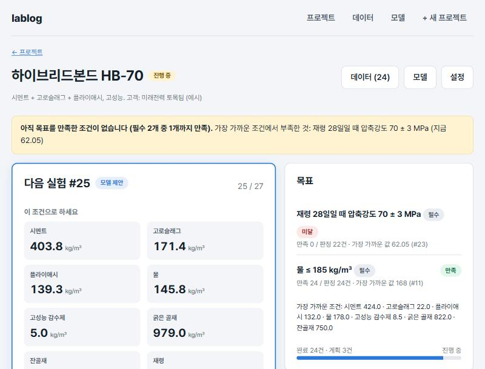
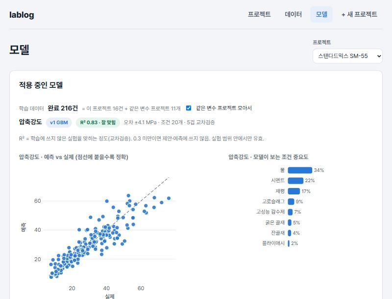

lablog
흩어진 실험을 한 곳에 모으고, 조건을 머신러닝으로 예측·시뮬레이션하는 실험 관리 도구
문제 · 이상 vs 현재
문제 상황 둘
① 실험 기록이 흩어져 있다엑셀·노트·메신저에 따로 적혀 모이지 않음모든 프로젝트의 실험이 한 표에 모여 있음
② 다음 실험 조건을 짐작한다경험으로 정하고, 빗나가면 하루가 감머신러닝으로 결과를 예측·시뮬레이션해 정함
→
해결 · 기능 둘
모으는 기능 + 시뮬레이션하는 기능
① 한 곳에 모으는 기능조건·결과만 같은 틀로 기록. 프로젝트가 달라도 한 표에 쌓여 바로 비교·학습 가능
② 시뮬레이션하는 기능쌓인 데이터로 머신러닝 학습. 조건을 넣으면 결과를 예측하고, 목표를 만족할 조건을 제안
→
결과
한 표 · 예측 · 목표 달성
992건
한 표에 모인 실험프로젝트 16개의 실험 기록 전부
80%
결과 예측 정확도실험 전에 결과를 맞히는 정도 (R² 0.8, 교차검증)
9 / 12
목표 달성 프로젝트예시 프로젝트 12개 중 9개가 실험 20여 번 안에 목표 도달


데이터 · 외부 공개 데이터 사용 — UCI Concrete Compressive Strength(콘크리트 배합 → 압축강도, 1,030건). 프로젝트 16개는 이 데이터를 목표별로 나눈 예시.
자세히
모으는 기능
- 프로젝트 = 입력(범위) · 측정 시점 · 출력 · 목표(목표값 ± 허용)
- 처음 조건은 범위를 고르게 덮는 설계(라틴 하이퍼큐브)로 제안, 연구원이 고쳐 씀
- 결과 기록은 숫자 입력 + 저장 1번, 필수 목표를 모두 만족하면 종료
- 표준화 박스플롯으로 이상치·소수점 실수 점검
시뮬레이션 기능
- 같은 변수 프로젝트를 모아 학습, 프로젝트 차이는 표시 변수
- RF · 선형 · kNN · GBM, 파라미터·조건 선택, 교차검증 R²·MAE·RMSE
- 버전 저장·적용, 적용 모델이 제안·예측에 쓰임
- 목표 만족 확률이 큰 조건 3개 제안, 조건 바꿔 보며 예측
만든 것
- 탭 셋: 프로젝트 · 데이터 · 모델
- 테스트 25 · CI · Vercel
- 문제정의·설계 문서, 12장 발표자료
React 19TypeScriptViteVitest자체 RF/능형/kNN/GBMSVGVercel